▲ 가우도와 육지를 잇는 출렁다리. 강진 하루 코스의 첫 정차지다 사진=한국관광공사
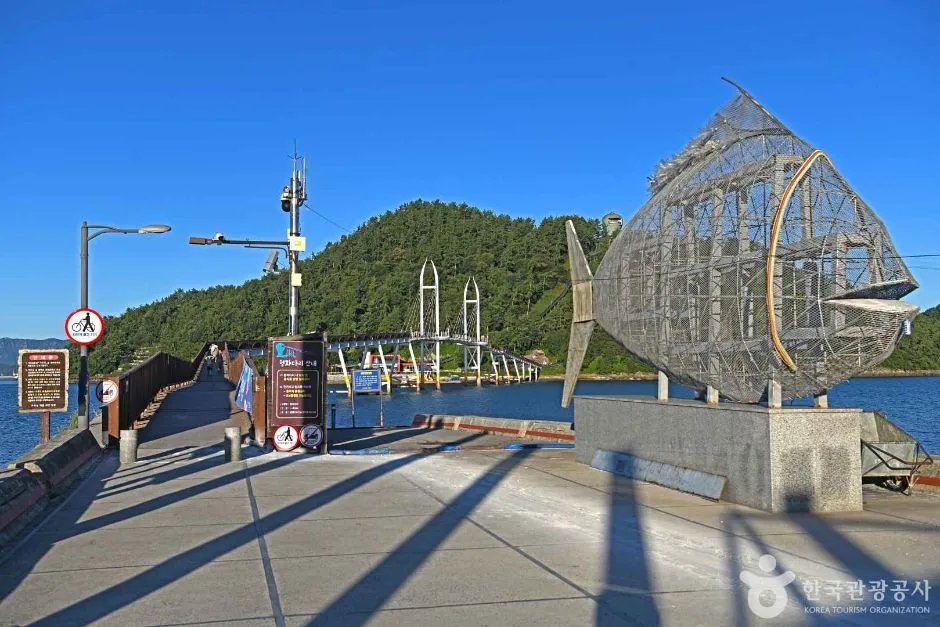
▲ 물고기 모양 조형물이 서 있는 가우도 선착장 부근. 뒤로 숲이 우거진 섬 능선이 보인다 사진=한국관광공사
1. "남도답사 일번지" — 강진 하루 코스의 뼈대
'남도답사 일번지'는 강진군이 관광 홍보에 쓰는 문구이자, 유홍준 교수의 《나의 문화유산답사기》 1권(1993년) 부제입니다. 이 책은 강진·해남 일대를 첫 답사지로 다뤘고, 그 답삿길에 다산초당이 포함됩니다. 다산 정약용이 강진에서 유배 18년을 보냈고, 만덕산 자락의 다산초당과 백련사가 그 중심입니다.
이번 코스는 바다 위 다리를 건너는 섬(가우도), 유배객이 오래 머문 초당(다산초당), 그 초당에서 걸어 이어지는 절(백련사) 세 곳이 뼈대입니다. 가우도 → 다산초당 → 백련사 순서로 이동하면 되고, 여유가 되면 다산박물관과 사의재를 곁들일 수 있습니다. 세 곳 모두 한국관광공사 자료에 주차 가능으로 올라 있으나, 백련사 동백나무 숲 항목에는 '주차 불가능'으로 적혀 있어 사찰 주차장을 이용하는 것이 안전합니다.
📍 행정구역 표기
강진군청 공식 관광 사이트는 주소를 '전남광주통합특별시 강진군'으로 적고 있고, 한국관광공사 TourAPI도 같은 표기를 씁니다. 내비게이션에는 시설 이름이나 도로명 주소를 그대로 입력하면 됩니다.
같은 남도 권역의 해남 코스는 해남 달마산 도솔암 임도 걷기 기사에서 다뤘습니다. 강진과 해남을 하루씩 이어 잡으면 2박 3일 남도 코스가 됩니다.
2. 가우도 — 다리 두 개로 육지와 이어진 강진의 유일한 유인도
가우도(駕牛島)는 강진의 8개 섬 가운데 유일한 유인도입니다. 강진군청 안내에 따르면 대구면과 잇는 저두출렁다리(438m), 도암면과 잇는 망호출렁다리(716m) 두 개가 놓여 있어 어느 쪽에서든 걸어 들어갈 수 있습니다. 이름은 강진읍 보은산이 소의 머리, 섬 모양이 소의 멍에에 해당한다는 데서 왔다고 합니다.
▲ 흰색 아치형 주탑이 서 있는 가우도 출렁다리 일대 사진=한국관광공사
해안선을 따라 조성된 생태탐방로 '함께해(海)길'은 2.5km이며 도보로 1시간~1시간 30분 걸립니다. 섬 정상에는 25m 높이의 청자타워가 있어 강진만을 한눈에 볼 수 있고, 저녁이 되면 두 출렁다리에 조명이 켜진다고 강진군이 소개합니다.
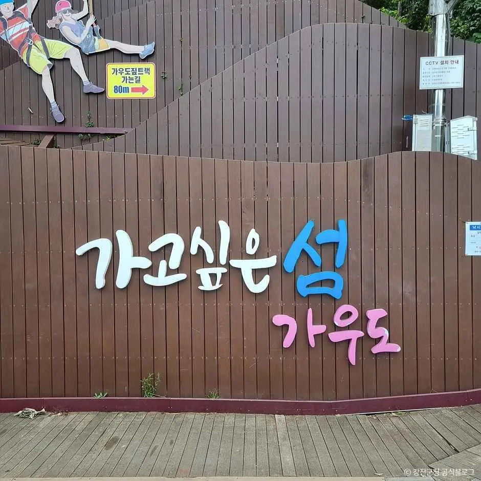
▲ "가고 싶은 섬"이라는 문구가 적힌 가우도 안내 조형물 사진=한국관광공사

▲ 출렁다리 위 나무 데크 구간. 케이블이 이어진 난간 사이로 섬으로 향하는 길이 보인다 사진=한국관광공사
| 항목 | 내용 |
|---|---|
| 주소 | 강진군 도암면 신기리 산31-2 |
| 연결 다리 | 저두출렁다리 438m(대구면), 망호출렁다리 716m(도암면) |
| 섬 둘레 탐방로 | 함께해(海)길 2.5km, 1~1.5시간 |
| 개방 | 상시 개방, 연중무휴 (별도 입장료 안내는 확인되지 않음) |
| 주차 | 가능 (요금은 현장 확인 필요) |
| 문의 | 061-430-3312 (강진군 관광안내), 061-430-3349 (문화관광과) |
3. 짚트랙·모노레일 — 요금과 운영시간 (10월부터 시간 달라진다)
가우도의 액티비티는 청자타워에서 대구면 저두 해안으로 내려오는 짚트랙과, 섬 안을 오르내리는 모노레일 두 가지입니다. 짚트랙은 강진군이 약 1km, 강진군문화관광재단이 973m로 소개하는 구간이며 횡단은 약 1분입니다. 안전교육을 포함한 체험 시간은 약 15분, 한 번에 4명이 탑승하고 마주 보며 내려오는 구조입니다.
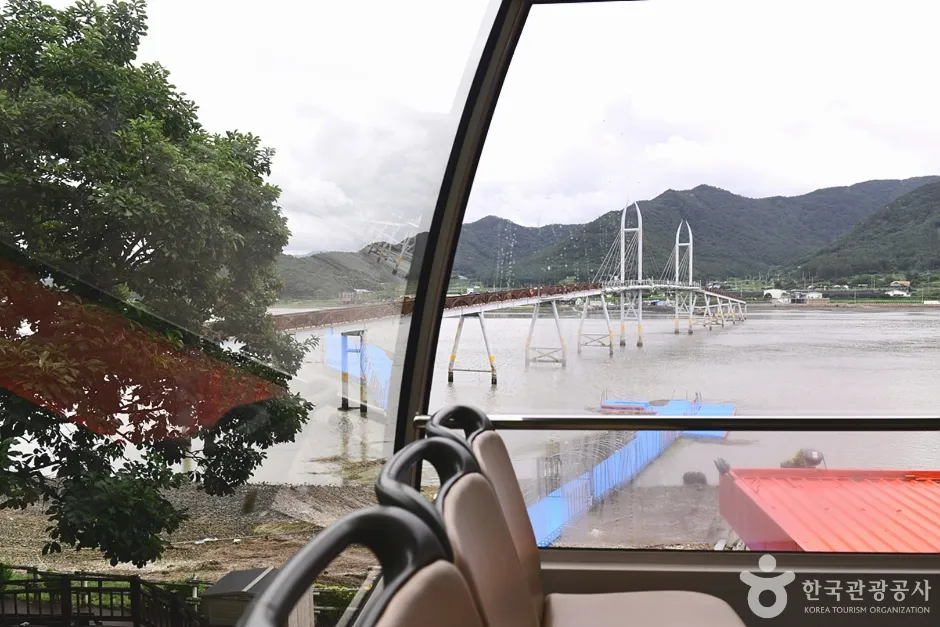
▲ 모노레일 차창으로 내다본 출렁다리와 강진만 풍경 사진=한국관광공사
| 구분 | 내용 |
|---|---|
| 요금 | 어른 3,000원 / 청소년·군인·어린이 1,500원 / 강진군민 2,000원 |
| 이용권 | 왕복 이용권 (내려올 때까지 보관), 만 6세 미만은 보호자 동반 시 무료 |
| 동절기(10~2월) | 09:00~16:30 (매표 마감 16:00) |
| 춘절기(3월·9월) | 09:00~17:00 (매표 마감 17:00) |
| 하절기(4~8월) | 09:00~18:00 (매표 마감 17:30) |
| 점심시간 | 12:00~13:00 운행하지 않음 |
| 구분 | 요금 |
|---|---|
| 개인 | 25,000원 (5,000원권 강진사랑상품권 지급) |
| 단체(20인 이상) | 18,000원 |
| 학생(고등학생까지) | 17,000원 (학생 단체 20인 이상 15,000원) |
| 강진군민 | 15,000원 |
| 운영시간 | 09:00~18:00 |
| 짚트랙 061-433-9500 · 모노레일 061-433-8856 · 요금·시간은 변동될 수 있어 방문 전 확인 필요 | |
✅ 이 기사를 읽는 시점의 주의점
· 모노레일은 10월 1일부터 동절기 시간표(마지막 매표 16시)가 적용됩니다.
· 점심시간(12~13시)에는 운행하지 않으므로 오전 중 타거나 13시 이후로 잡으세요.
· 강진군 관광 사이트에 짚트랙 온라인 예약 메뉴가 있으니 사전 예약 여부를 확인하세요. 기상 상황에 따른 운영 여부는 당일 문의가 안전합니다.
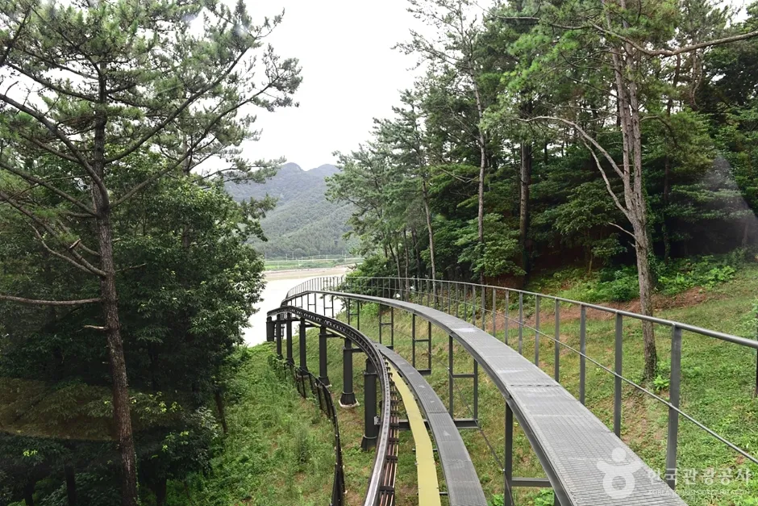
▲ 숲 사이 비탈을 따라 이어지는 모노레일 궤도 사진=한국관광공사
4. 다산초당 — 유배객이 10여 년 머문 만덕산 기슭
다산초당은 정약용이 강진 유배 18년 중 10여 년을 생활하며 《목민심서》《경세유표》《흠흠신서》 등 600여 권의 저술을 집대성한 곳입니다. 강진군 안내에 따르면 다산은 1801년 신유사옥으로 경상도 장기에 유배됐다가 황사영 백서 사건으로 강진에 다시 유배됐고, 처음 8년은 강진읍 동문 밖 주막과 고성사 보은산방, 제자 이학래의 집 등을 옮겨 다녔습니다. 1808년 봄 다산초당으로 옮겨 해배되는 1818년 9월까지 머물렀습니다.
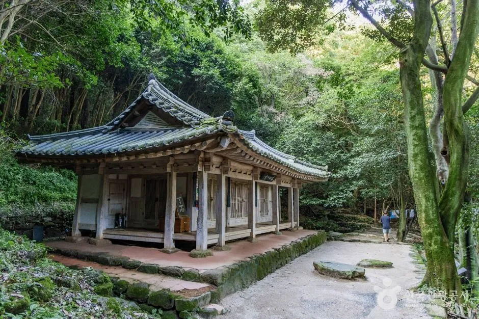
▲ 숲에 둘러싸인 다산초당 경내의 기와지붕 건물 사진=한국관광공사
초당 건물은 원래 목조 초가였으나 1936년 노후로 무너졌고, 1957년 강진 다산유적보존회가 그 자리에 목조 기와집으로 다시 지었습니다. 이후 다산이 거처했던 동암과 제자들이 묵던 서암도 복원됐습니다. 현판의 '다산초당' 글씨는 추사 김정희의 친필을 집자해 모각한 것이고, 초당 일대는 '정약용 유적'으로 묶여 사적 제107호로 보호받고 있습니다.

▲ 숲에 둘러싸인 다산초당 경내의 또 다른 전통 건물 사진=한국관광공사
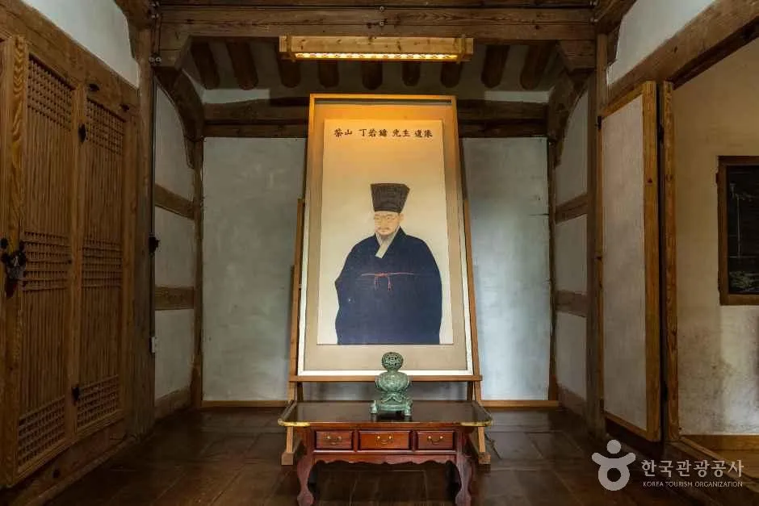
▲ 실내에 모신 인물 초상화와 작은 상 사진=한국관광공사
경내에는 '다산4경'으로 불리는 정석·약천·다조·연지석가산이 있습니다. 정석은 다산이 직접 '丁石' 글자를 새긴 바위, 약천은 차를 끓이던 약수, 다조는 차를 끓이던 반석, 연지석가산은 연못 가운데 작은 산처럼 쌓은 돌무더기입니다. 다산이 시름을 달래던 자리에는 정자 천일각이 서 있습니다. 초당으로 오르는 산길에는 소나무 뿌리가 핏줄처럼 드러난 구간이 있다고 강진군이 소개합니다.
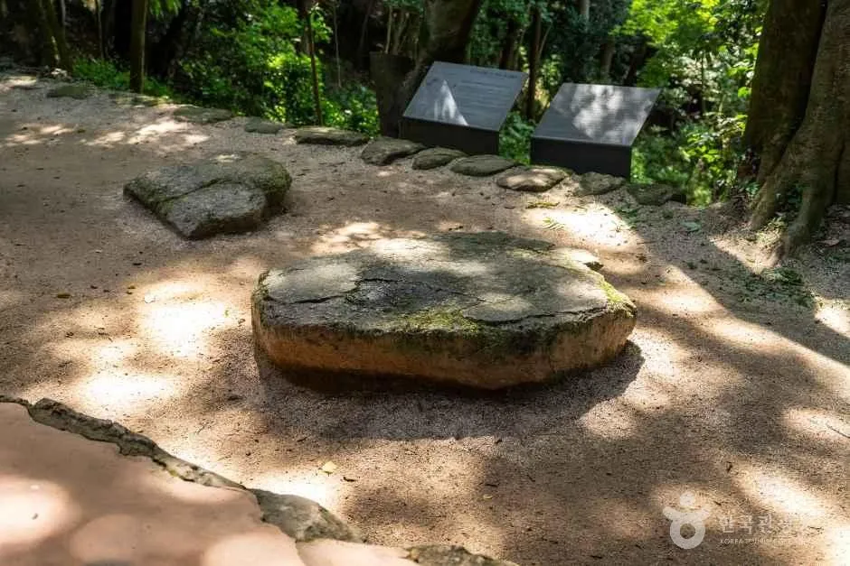
▲ 초당 경내에 놓인 넓적한 돌과 안내판 사진=한국관광공사
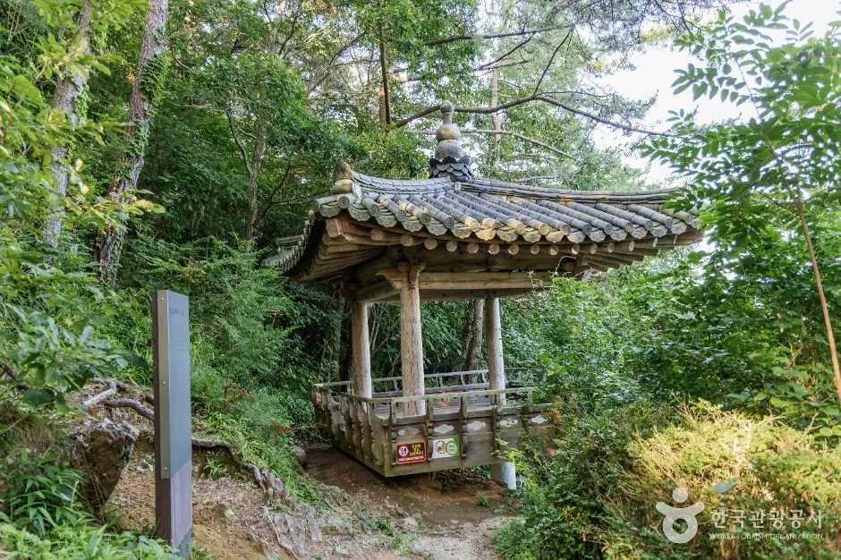
▲ 숲속에 서 있는 육각 지붕 정자 사진=한국관광공사
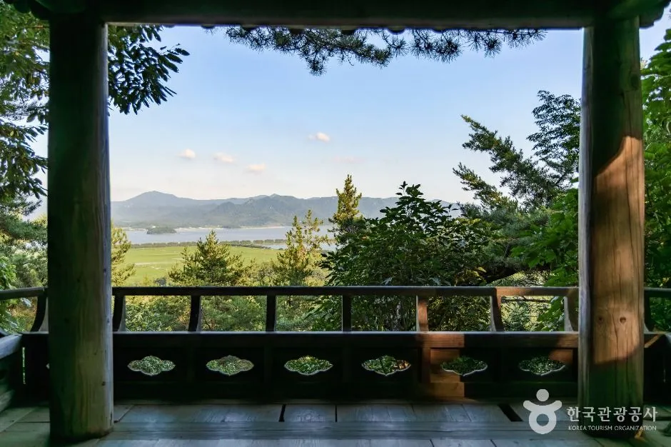
▲ 정자 난간 너머로 강진만과 들판이 펼쳐진다 사진=한국관광공사
| 항목 | 내용 |
|---|---|
| 주소 | 강진군 도암면 다산초당길 68-35 |
| 운영시간 | 09:00~18:00, 연중무휴 |
| 입장료 | 무료 |
| 지정 | 사적 제107호 '정약용 유적' |
| 주차 | 가능 (귤동마을 쪽에서 오르는 길이 일반적이며, 세부 주차장 위치·요금은 현장 확인 필요) |
| 문의 | 061-430-3911 (문화유산팀 061-430-3363) |
5. 다산박물관·사의재 — 다산의 강진 18년을 순서대로 보고 싶다면
다산의 유배 행적은 사의재(1801~1805) → 초당 이전(1808) → 해배(1818) 순서로 이어집니다. 한국관광공사 자료에 따르면 사의재는 다산이 1801년 겨울 강진에 와서 처음 묵은 주막 '동문매반가' 자리이고, 1805년 겨울까지 머물며 「아학편」으로 제자를 가르치고 「경세유표」와 「애절양」을 집필했습니다. 강진군이 고증을 거쳐 2007년 주막터를 복원했으며 현재 동문매반가와 한옥체험관이 운영됩니다.
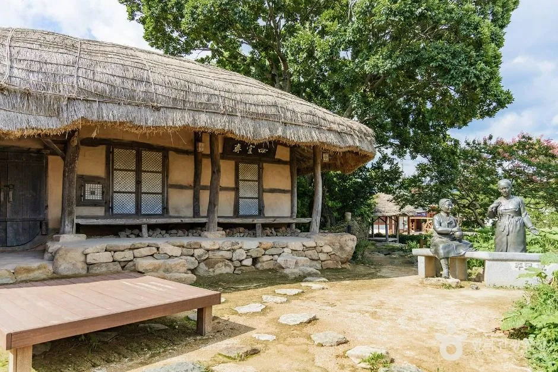
▲ 초가지붕을 얹은 주막 건물과 마당의 인물 조형물이 있는 사의재저잣거리 사진=한국관광공사
다산박물관은 도암면 다산로 766-20에 있으며, 다산의 생애와 업적을 영정·연보·유물 전시로 정리한 곳입니다. 백련사 소개 자료도 절 주변에 다산초당과 다산박물관이 있다고 안내합니다.
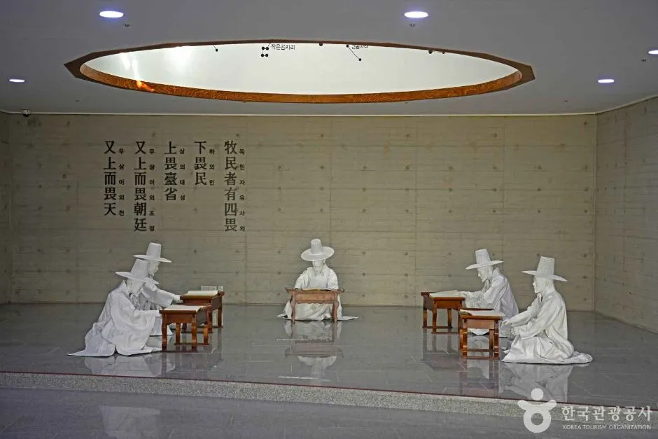
▲ 다산박물관 전시실. 책상 앞에 앉은 인물 조형물이 놓여 있다 사진=한국관광공사
| 장소 | 주소 | 이용 안내 |
|---|---|---|
| 사의재저잣거리 | 강진읍 사의재길 27 | 다산이 1801~1805년 머문 주막터 복원, 동문매반가·한옥체험관 운영 |
| 다산박물관 | 도암면 다산로 766-20 | 09:00~18:00 (입장마감 17:30), 월요일 휴관(월요일이 공휴일이면 다음 첫 평일 휴관), 성인 2,000원·청소년/군인 1,000원·어린이 500원 |
요금·휴관일은 한국관광공사 자료 기준이므로 방문 전 강진군 안내로 다시 확인하세요.
6. 다산길 — 초당에서 백련사까지 800m, 완만한 숲길의 난이도
다산초당과 백련사 사이 숲길은 강진군 안내로 800m, 걸어서 30분 정도입니다. 다산이 백련사의 혜장 스님을 만나러 오가던 길이며, 동백나무와 차나무가 어우러지고 경사가 완만한 길입니다. 오솔길 중간에는 쉬어 갈 수 있는 해월루가 있습니다.
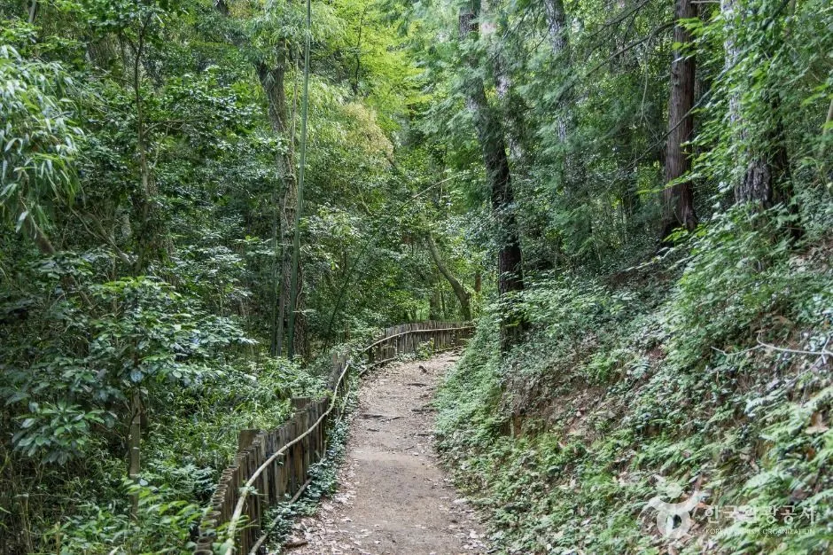
▲ 다산초당 주변 숲속 흙길. 완만한 오솔길이 이어진다 사진=한국관광공사
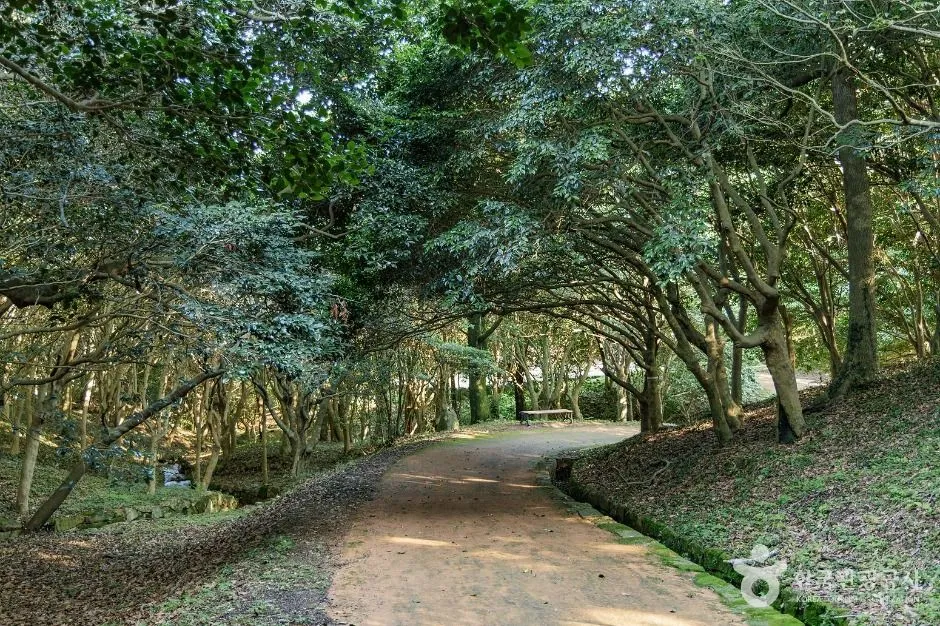
▲ 동백나무가 늘어선 숲길. 초당과 백련사를 잇는 길에서 만나는 풍경이다 사진=한국관광공사
| 코스 | 거리·시간 | 난이도·특징 |
|---|---|---|
| 다산초당 ↔ 백련사 | 800m, 약 30분 (강진군) | 산비탈을 가로지르는 완만한 길 |
| 귤동마을 → 다산초당 → 백련사 | 총 1.3km, 넉넉히 40분 (한국관광공사 여행기사) | 귤동마을~초당 약 300m는 가파른 산길, 이후 완만 |
| 백련사 ↔ 다산초당 차량 이동 | 차로 약 6분 (한국관광공사 동백나무 숲 소개) | 실제 이동 시간은 내비게이션으로 확인 |
차량 이동 방법은 두 가지입니다. 한 곳(귤동마을 또는 백련사)에 주차하고 왕복하거나, 초당 → 백련사 편도만 걷고 나머지는 차를 옮기는 방식입니다. 초당까지 오르는 300m가 가파르다는 안내가 있으므로, 체력이 부담되면 백련사에서 출발해 초당까지 다녀오는 쪽이 편할 수 있습니다.
✅ 다산길 걷기 체크리스트
· 편도 약 800m, 30분 (사진 촬영 시 더 걸림)
· 가을 낙엽·습기로 바닥이 미끄러울 수 있어 운동화 권장
· 백련사 쪽 조망은 해가 기울기 전 강진만이 가장 잘 보임
7. 백련사 — 동백 숲과 강진만 조망, 가을엔 무엇을 보나
백련사는 신라 문성왕 때 무염국사가 만덕사라는 이름으로 창건했다고 전해지고, 고려 희종 때 원묘국사 요세가 중창해 백련결사로 이름을 알린 절입니다. 한국관광공사 자료는 다산이 강진 유배 시절 이곳의 혜장선사와 교류한 공간으로도 소개합니다. 템플스테이와 다도체험 프로그램도 운영합니다.
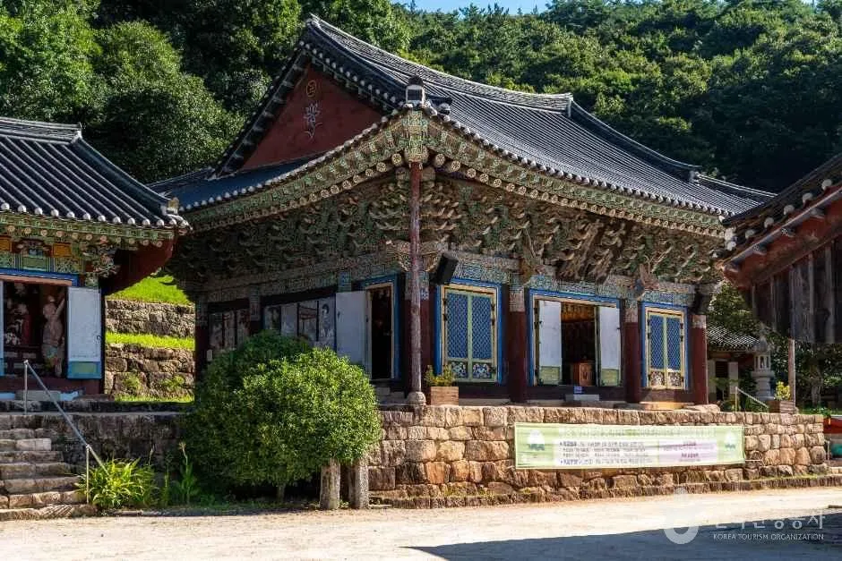
▲ 화려한 단청이 눈에 띄는 백련사 경내 전각 사진=한국관광공사
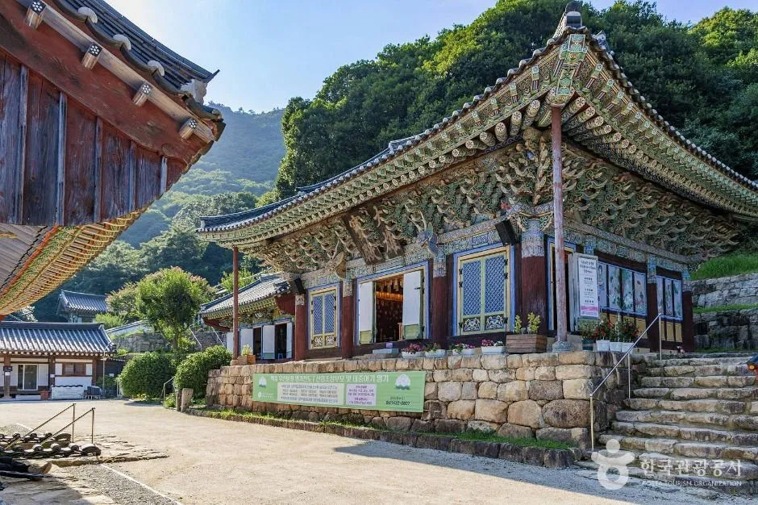
▲ 돌계단 위 목조 전각. 만덕산 중턱에 자리한 백련사 경내 사진=한국관광공사
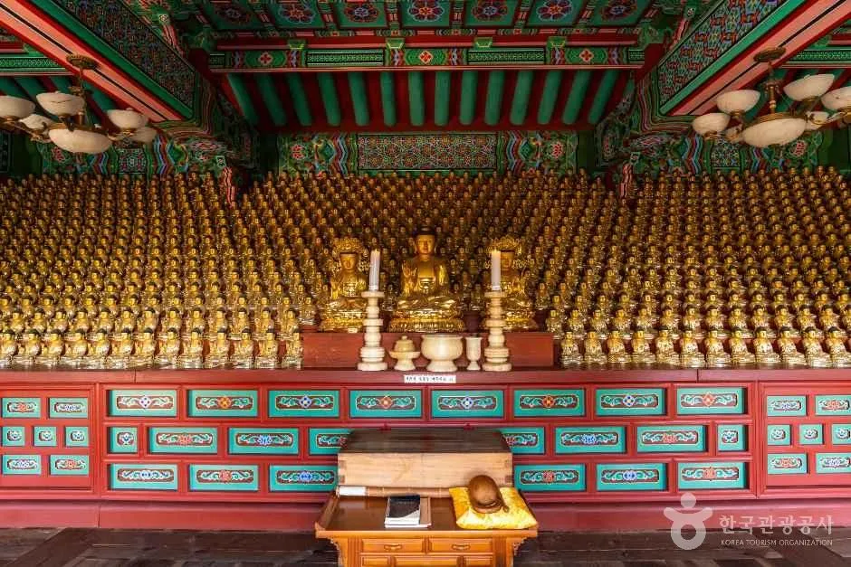
▲ 수많은 금빛 불상이 모셔진 법당 내부 사진=한국관광공사
백련사 동백나무 숲은 1962년 12월 7일 천연기념물 제151호로 지정됐고, 남쪽과 서쪽으로 약 1,500그루가 자생합니다. 개화 시기는 자료마다 조금 다릅니다. 한국관광공사는 동백숲 항목에서 1월부터 피어 3~4월에 만개한다고, 백련사 항목에서는 11월 말부터 피기 시작해 3월 말 만개한다고 적었습니다. 어느 쪽이든 9월 말에는 꽃이 아니라 짙은 초록 숲을 보게 됩니다.
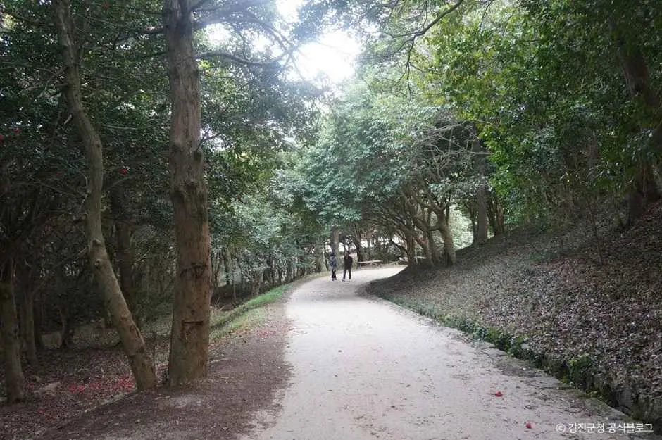
▲ 백련사 동백나무 숲 일대의 흙길. 짙은 초록빛 잎이 이어진다 사진=한국관광공사
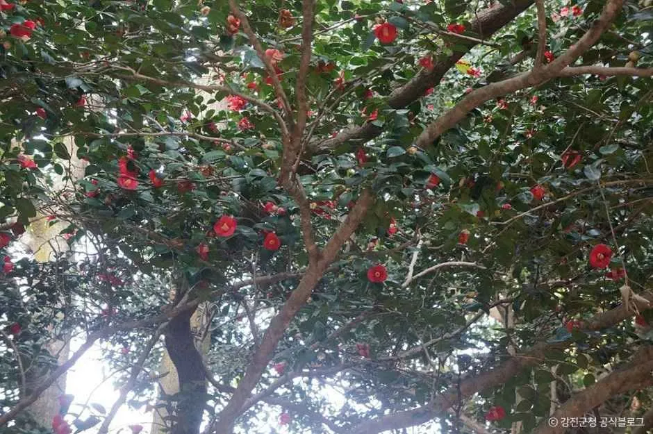
▲ 붉게 꽃이 핀 동백나무. 동백은 겨울~봄에 피므로 9월 말에는 만날 수 없는 모습이다 사진=한국관광공사
2025년 3월 19일에는 다산초당과 백련사 일원 약 44만㎡가 국가 명승으로 지정됐습니다. 지정 명칭은 '강진 만덕산 백련사와 다산초당 일원'으로, 국가유산포털에서 확인할 수 있습니다.
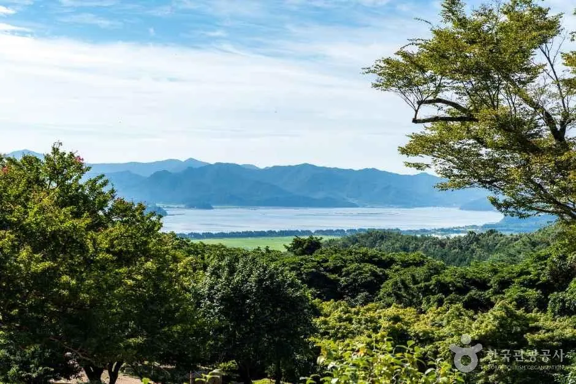
▲ 백련사 방향 언덕에서 내려다본 강진만과 먼 산줄기 사진=한국관광공사
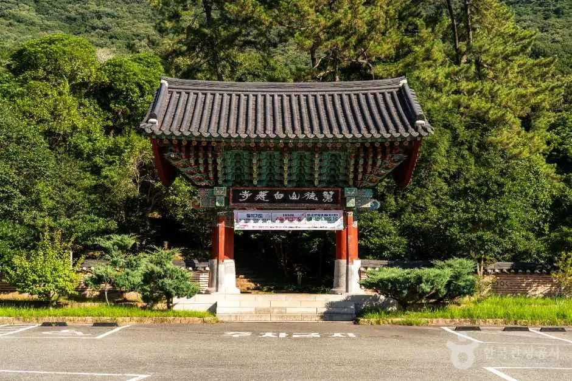
▲ 기와지붕을 얹은 사찰 입구 문. 앞으로 포장된 주차 공간이 이어진다 사진=한국관광공사
| 항목 | 내용 |
|---|---|
| 주소 | 강진군 도암면 백련사길 145 |
| 운영시간 | 09:00~18:00, 연중무휴 (동백나무 숲은 상시 개방) |
| 주차 | 백련사 항목은 '가능', 동백나무 숲 항목은 '불가능'으로 표기 — 사찰 주차장 이용, 현장 안내 확인 |
| 동백 개화기 | 겨울~봄 (9월 말에는 꽃 없음) |
| 문의 | 061-432-0837 |
8. 하루 동선과 가을 방문 팁
추천 순서는 오전 가우도 → 점심 → 오후 다산초당·백련사입니다. 모노레일 점심 휴무(12~13시)를 피하면서 늦은 오후 백련사 조망을 해 지기 전에 볼 수 있기 때문입니다.
| 시간대 | 일정 | 비고 |
|---|---|---|
| 09:30~12:00 | 가우도 (출렁다리·모노레일·짚트랙) | 모노레일 12시 전 탑승 |
| 12:00~13:30 | 점심 | 강진읍 또는 마량항 일대 (식당은 현장 확인) |
| 14:00~15:30 | 다산초당 관람 | 귤동마을 쪽에서 오르는 길 |
| 15:30~17:30 | 다산길 걷기·백련사 | 강진만 조망은 해 지기 전 |
🍂 가을 방문 팁
· 10월부터 모노레일 매표 마감이 16시로 앞당겨집니다.
· 다산초당은 입장 무료지만 초당 오르막이 있어 편한 신발이 필요합니다.
· 가우도 출렁다리는 저녁에 조명이 들어오지만, 모노레일 운행은 그 전에 끝납니다.
다른 남도 코스와 이어 가고 싶다면 해남 달마산 도솔암 임도 걷기, 완도 청산도 슬로길 기사도 함께 참고하세요.
한눈에 보는 요약
· 가우도는 저두(438m)·망호(716m) 출렁다리로 걸어 들어가는 강진 유일 유인도, 함께해(海)길 2.5km
· 모노레일 어른 3,000원(10월부터 마지막 매표 16시), 짚트랙 개인 25,000원
· 다산초당은 입장 무료·사적 제107호, 초당~백련사 숲길은 약 800m·30분
· 백련사 동백숲(천연기념물 제151호)은 겨울~봄 개화, 가을엔 초록 숲과 강진만 조망
· 다산초당 주차장 세부 위치·요금은 현장 확인 필요